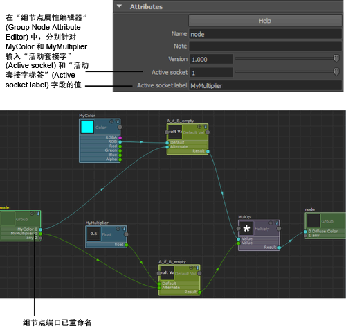
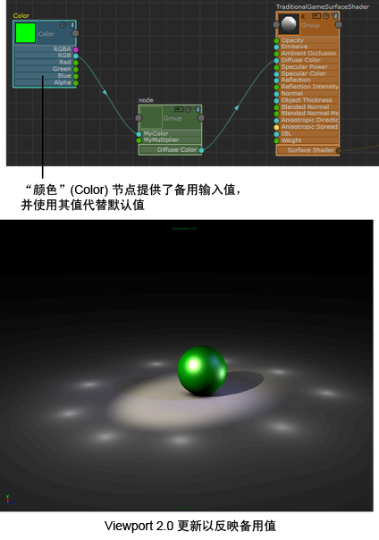

您可以在图表中添加“默认值”(Default Value)节点。这样，MyColor 会提供一个默认输入值，同时用户还可以提供备用输入值。如果已提供备用值，则会使用该值。否则，将使用默认值。
在图表中添加默认值节点
-
从 ShaderFX 菜单栏中选择“设置 > 切换高级模式”(Settings > Toggle Advanced Mode)以启用高级模式。使用此模式可选择更大范围的节点。
- 进入组视图，在工作区单击鼠标右键，然后选择“图形节点 > 代码控制 > 默认值”(Graph Nodes > Code Control > Default Value)来创建“默认值”(Default Value)节点。
- 连接节点，如下所示：
- 将 MyColor 的“RGB”属性连接到“默认值”(Default Value)的“默认”(Default)属性。
- 将“默认值”(Default Value)的“备用”(Alternate)属性连接到组节点。“备用 0”(Alternate 0)端口将会自动显示。
- 将“默认值”(Default Value)的“结果”(Result)属性连接到“相乘”(Multiply)的“值”(Value)属性。
- （可选）创建另一个“默认值”(Default Value)节点并将其连接到 MyMultiplier，如下所示：
- 将 MyMultiplier 的“浮点型”(float)属性连接到“默认值”(Default Value)的“默认”(Default)属性。
- 将“默认值”(Default Value)的“备用”(Alternate)属性连接到组节点。“备用 1”(Alternate 1)端口将会自动显示。
- 将“默认值”(Default Value)的“结果”(Result)属性连接到“相乘”(Multiply)的“值”(Value)属性。
设置组节点端口标签
- 选择相应的组节点。在“属性编辑器”(Attribute Editor)中，确保“活动套接字 0”(Active socket 0)已选定，然后添加活动套接字标签 MyColor。
组节点的第一个端口现已重命名为 MyColor 0。
- 对第二个端口重复以上操作。使用“活动套接字”(Active socket) 1 和“活动套接字标签”(Active socket label) MyMultiplier。
组节点的第二个端口现已重命名为 MyMultiplier 1。

提供备用输入值
- 退出组视图并创建“颜色”(Color)节点（“硬件着色器节点 > 值 > 颜色”(Hw Shader Nodes > Values > Color)）。
- 将“颜色”(Color)节点的“RGB”属性连接到组节点的 MyColor 属性。
- 系统会使用此备用“颜色”(Color)节点，而非默认值。

- （可选）为“浮点型”(Float)乘数重复以上操作。创建“浮点型”(Float)节点（“硬件着色器节点 > 值·> 浮点型”(Hw Shader Nodes > Values > Float)）并将其“浮点型”(float)属性连接到组节点的 MyMultiplier 端口。